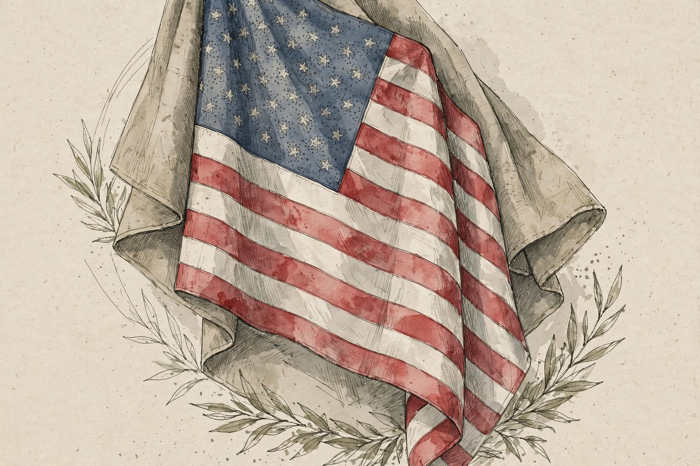

Featured
Ideas, politics and culture from The Atlantic

The Atlantic's homepage fronts its magazine journalism: politics and ideas essays, cultural criticism, science and health writing, and long-form features — the digital front door of a magazine founded in Boston in 1857.
Politics
American politics analysed
The politics desk's essays and reporting.
Ideas
The argument section
Ideas is the magazine's historic franchise.
Culture
Books, film, TV and music criticism
The culture desk.
Magazine
This month's issue
The print edition's features.